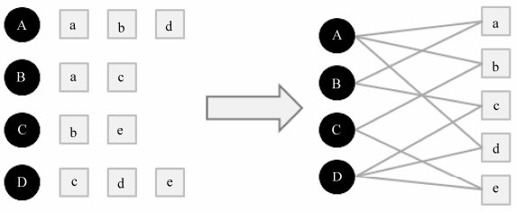
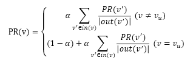

六、 基于图的模型
用户行为很容易用二分图表示。基于邻域的模型可以看做基于图的模型的简单形式，因此很多研究人员把基于邻域的模型也成为基于图的模型。
1. 用户行为数据的二分图表示
令G(V,E)表示用户物品二分图，其中V = VU∪VI由用户顶点集合VU和物品顶点集合VI组成；对于每一个二元组(u,i)，图中都有一套对应的边 ，其中vu∈VU是用户u对应的顶点，vi∈VI是物品i对应的顶点。下图表示一个二分图，两个节点之间的边代表用户对物品的行为：

2. 基于图的推荐算法
个性化推荐策略：度量用户顶点 与 没有边直接相连的物品节点在图上的相关性，相关性越高的物品在推荐列表中的权重就越高。
(1) 影响相关性的因素：
a. 两个顶点之间的路径数
b. 两个顶点之间路径的长度
c. 两个顶点之间的路径经过的顶点
(2) 高相关性节点的特征：
a. 两个顶点之间有很多路径相连
b. 连接两个顶点之间的路径长度都比较短
c. 连接两个顶点之间的路径不会经过出度比较大的顶点
(3) 基于随机游走的PersonalRank算法
假设要给用户u进行个性化推荐，可以从用户u对应的节点 开始在用户物品二分图上进行随机游走。游走到任何一个节点时，首先按照概率α决定是继续游走，还是停止这次游走并从 节点开始重新游走。如果决定继续游走，那么就从当前节点指向的节点中按照均匀分布随机选择一个节点作为游走下次经过的节点。这样，经过很多次随机游走后，每个物品节点被访问到的概率会收敛到一个数，最终的推荐列表中物品的权重就是物品节点的访问概率。抽象成公式就是：

虽然PersonalRank算法可以通过随机游走进行比较好的理论解释，但该算法在时间复杂度上有明显的缺点。为每个用户进行推荐时，都需要在整个用户物品二分图进行迭代。
(4) 两种解决这个问题的方案
a. 减少迭代次数，在收敛之前就停止（影响精度）
b. 从矩阵论出发，重新设计算法